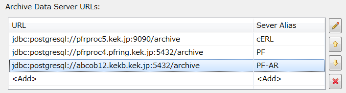

Data Browser Changelog
Version numbers in here refer to the plugin org.csstudio.trends.databrowser2.
Version 4.2.2 - 2016-04-12
- Opacity of "Area" is configurable via preference.
- Enable fonts for axis labels and scale.
Version 4.2.0 - 2015-12-17
- When adding PVs from archive search via drag/drop,
dialog allows selection of axis and scan period.
- "Search" view closes underlying archive reader.
- RDB archive reader caches JDBC connection when fetching updates for multiple traces.
- Plot's "Zoom In" requires a rubberband rectangle of at least 20 pixels to avoid
accidentally click-jerk-zooming into a few pixels.
- Fix erroneous gap in trace if 'Archive Off' was closely followed by an initial new sample,
then no changes for a while.
Version 4.1.5 - 2015-07-15
- Show units in annotations, cross hair cursor, legend, axis.
Version 4.1.4 - 2015-06-03
- Export shows array values (used to suppress when more than 10 elements).
- Detect write error.
Version 4.1.3 - 2015-05-05
Version 4.1.2 - 2015-03-19
- Context menu action to save snapshot as file.
- Instead of waiting for next regular redraw, update plot right away
when trace shown/hidden/removed/added, trace color or name changed,
axis name changed, axis left/right changed.
- Items can be moved up/down within list of traces.
- Plot has title.
- Tool bar button for new Data Browser does just that, not changing the perspective.
Changing the perspective, i.e. the layout of *.opi displays etc.,
needs to be a conscientious user decision and not a side effect of
opening another data browser plot.
Version 4.1.1 - 2015-01-05
- Better tick mark selection for log axis.
- Linear axis switches to exponential notation when range to large/small.
Version 4.1.0 - 2014-15-01
Replaced plot package, updated configuration save/load, fixing several bugs.
- Plot more compact, replacing legend with trace names on axes.
- Toolbar more compact.
- Streamlined zoom/pan options with better visual feedback.
- Each added trace starts with a new color, reducing likelihood of plots where users cannot determine which trace corresponds to what item (#213).
- Annotation content with place holders for name, position, value.
- Annotation removal dialog right away lists annotations to remove.
- 'Color' property of trace or axis is always visible, even if that 'row' of the table is selected.
- Tables no longer have "vanishing columns" on Linux; enforcing minimum column width (#838).
- Dropping of several PVs works (used to drop "[PV1", "PV2,", "LastPV]")
- Most drawing performed in background threads, no longer delaying the UI thread.
- 'Autoscale' performed in parallel background threads, using all CPUs to determine range of traces.
- Cursor values determined in background thread via binary search (Not in UI thread, not via linear search. Also fixes #536).
- All configuration options now in 'Properties' view, no plot config that allows corrupting time axis settings.
- All configurable plot options now saved/restored (#428, #632).
- Consistently persisting configuration of 'Model', instead of separating and then diverging the 'Model' and 'XYGraph' settings (#694, #755).
- Provide DataBrowserSchema.xsd for current *.plt file format.
- Using Java 8 'Instant' for all time operations.
- "Edit Items" dialog (for multiple items) has icon, consistent layout.
- Plot can show VStatistics std. deviation as well as min/max (#764).
- Can "Remove Archive Data Source" even if source has no name (just Key and URL)
- Time Axis tab offers shortcuts to select common time ranges, configurable via preferences (#512).
- "Save Changes" option: If de-selected, changes will not mark the config as 'dirty', so no Do-you-want-to-save prompt.
Allows users to zoom, pan, then simply close *.plt. Can still "Save As".
Version 4.0.0 - 2014-06-20
- Bugfix: Option "When archived data arrives: Perform auto-zoom", in addition to the value axes, also zoomed the time axis. This prevented any time range adjustments.
- Bugfix: NullPointerException when removing an item.
Version 3.2.17 - 2014-03-06
- Added an option to automatically reload the history data when the live buffer fills up.
- Added an option to set the future buffer for the trend. This is the amount of time from now to the right side of the chart.
- Display the values at the cursor position in the Properties table.
- Do not reset the trend appearance when the buffer size is changed.
- Columns exported to VTable are now called Timestamp and Value instead of X and Y.
- Bugfix: Do not apply XYGraphSettings when a new trend is open.
- Bugfix: Do not apply the axis title font to the axis scale.
- Warning elimination: removed unused variable in the EditItemsCommand.
Version 3.2.16 - 2014-02-14
- Fixed some bugs with .plt files loading.
Version 3.2.15 - 2014-02-06
- Separated the presentation of the X and Y labels from the axis trace. Each option can be (de)activated independently.
- Exported the value at mouse position to the PV Manager (dependency to plug-in org.csstudio.swt.xygraph.pvmanager added).
Version 3.2.14 - 2014-01-28
- Skip printer check on GTK to avoid hangups.
Version 3.2.13 - 2013-12-26
- Data Browser Plot XYGraph Settings are now ALL saved within the configuration file.
Version 3.2.12 - 2013-11-22
- Add X and Y labels on the axis when the Show value labels option is activated.
- Fix Archive Search: On error, the search pattern and button were disabled, requiring close/re-open of the search panel.
Version 3.2.11 - 2013-11-06
- Fix zoom bug:
When scrolling, zooming into 'left' area of plot such that the
scrolling gets disabled because 'end' is no longer close to 'now', the
start/end times were wrong, using start of the zoomed area as the end.
- 'Trace Type' includes "direct" option for Area and Single line that uses a linear connection from sample to sample, no stair-step.
Version 3.2.2 - 2013-09-23
- Fix: 'Export' failed with multiple data sources unless every source knew the channel.
Version 3.2.1 (KEK 3.2.0) - 2013-06-13
- Supports alias name of Archive Data Source URLs to recognize Data Source more easily in Archive Search view.


 'Refresh' option in plot's context menu to re-fetch archived data.
'Refresh' option in plot's context menu to re-fetch archived data.
Version 3.2.0 - 2013-01-31
- Export with linear interpolation.
- PVManager instead of utility.pv.
Version 3.1.3 - 2012-12-07
- CSV File import can import from exported single-channel data file.
Version 3.1.2 - 2012-08-23
- When retrieval from one archive data source fails, continue with others (used to stop retrieving).
- CSV File import from context menu failed on empty plot (no value axis).
- Enabled double buffering by default for all platforms.
Version 3.1.1 - 2012-07-20
- Menu File/Open can open out-of-workspace files. To save, enforces SaveAs to select workspace file.
- More of the plot settings are saved: Title, legend on/off, grid lines, ...
- For waveform PVs, the array element to plot can be selected. Same waveform PV can be displayed multiple times to show different array elements.
- Import data from CSV File as data source (rows must match
YYYY-MM-DD HH:MM:SS.SSS number).
- Spreadsheet export presents min/max of "optimized" data in columns suitable for error bar display.
- Matlab Export can use binary
*.mat files in addition to *.m text files.
Version 3.1.0 - 2012-01-30
- Search with empty channel name pattern gives info dialog, no channels.
- New option to always use 'default' archive data sources, ignoring sources from (old) *.plt.
- New option to log archive access errors instead of prompting in dialog.
Version 3.0.2 - 2011-08-25
- swt.xygraph - Fix for horizontal zoom that would 'invert' traces
Product History
At LANL, Craig McChesney and Sergei Chevtsov with contributions by Peregrine
McGehee implemented the Java Archive Viewer for displaying Channel Archiver
data (2004).
The first CSS Data Browser was based on Archive Viewer ideas but added
live data handling as well as CSS integration and pluggable support for more than
one type of historic data source (2007)